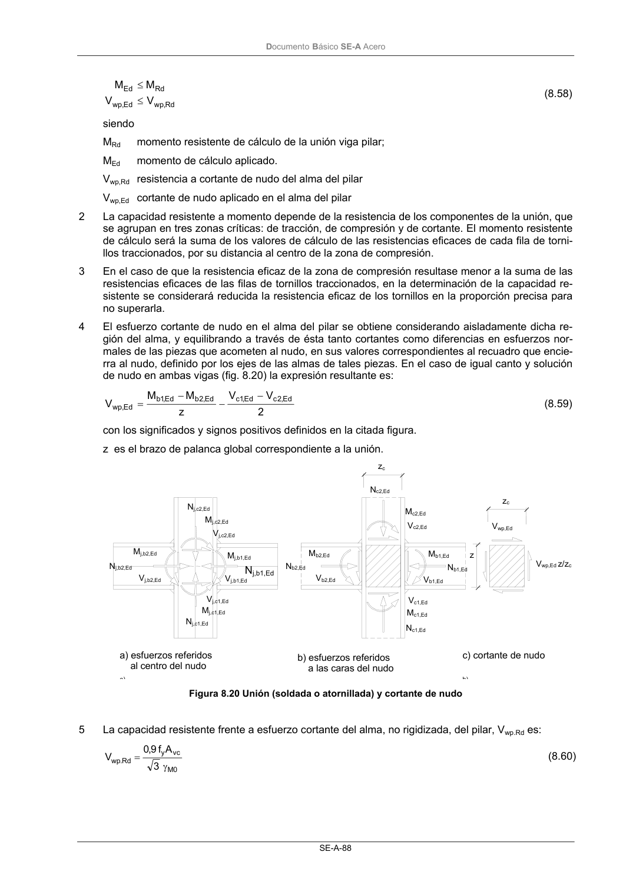

DB-SE-A · Página 90 · versión 2007-10-23
SHA256: 9ed9ea694aabfbda3bfbbef40dfe9223fde05d13c35bc2ba9751e5a96a22a64f · página física 90 de 168 · métodos de encabezado
solo si están cotejados.
Formatos: Markdown · JSON de bloques · PDF p. 90 · imagen PNG
Documento Básico SE-A Acero
SE-A-88
Rd
,
wp
Ed
,
wp
Rd
Ed
V
V
M
M
≤
≤
(8.58)
siendo
MRd
momento resistente de cálculo de la unión viga pilar;
MEd
momento de cálculo aplicado.
Vwp,Rd resistencia a cortante de nudo del alma del pilar
Vwp,Ed cortante de nudo aplicado en el alma del pilar
2
La capacidad resistente a momento depende de la resistencia de los componentes de la unión, que
se agrupan en tres zonas críticas: de tracción, de compresión y de cortante. El momento resistente
de cálculo será la suma de los valores de cálculo de las resistencias eficaces de cada fila de torni-
llos traccionados, por su distancia al centro de la zona de compresión.
3
En el caso de que la resistencia eficaz de la zona de compresión resultase menor a la suma de las
resistencias eficaces de las filas de tornillos traccionados, en la determinación de la capacidad re-
sistente se considerará reducida la resistencia eficaz de los tornillos en la proporción precisa para
no superarla.
4
El esfuerzo cortante de nudo en el alma del pilar se obtiene considerando aisladamente dicha re-
gión del alma, y equilibrando a través de ésta tanto cortantes como diferencias en esfuerzos nor-
males de las piezas que acometen al nudo, en sus valores correspondientes al recuadro que encie-
rra al nudo, definido por los ejes de las almas de tales piezas. En el caso de igual canto y solución
de nudo en ambas vigas (fig. 8.20) la expresión resultante es:
2
V
V
z
M
M
V
Ed
,
2
c
Ed
,1
c
Ed
,
2
b
Ed
,1
b
Ed
,
wp
−
−
−
=
(8.59)
con los significados y signos positivos definidos en la citada figura.
z es el brazo de palanca global correspondiente a la unión.
Figura 8.20 Unión (soldada o atornillada) y cortante de nudo
5
La capacidad resistente frente a esfuerzo cortante del alma, no rigidizada, del pilar, Vwp.Rd es:
0
M
vc
y
Rd
.
wp
3
A
f
9,0
V
γ
=
(8.60)
Nj,c2,Ed
Mj,c2,Ed
Nj,b1,Ed
Nj,b2,Ed
Nj,c1,Ed
Mj,c1,Ed
Mj,b1,Ed
Mj,b2,Ed
Vj,c2,Ed
Vj,c1,Ed
Vj,b2,Ed
Vj,b1,Ed
Nb1,Ed
Mb1,Ed
Vb1,Ed
Nb2,Ed
Mb2,Ed
Vb2,Ed
Nc2,Ed
Mc2,Ed
Vc2,Ed
Mc1,Ed
Vc1,Ed
Nc1,Ed
Vwp,Ed
Vwp,Ed z/zc
zc
z
zc
a) esfuerzos referidos
al centro del nudo
a)
b) esfuerzos referidos
a las caras del nudo
c) cortante de nudo
b)
